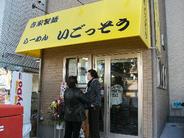
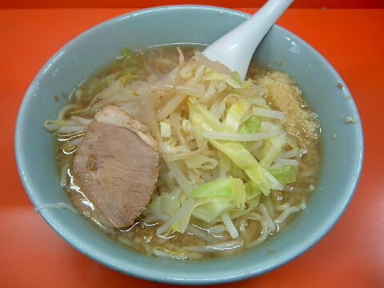
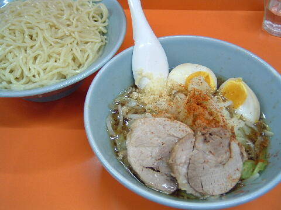
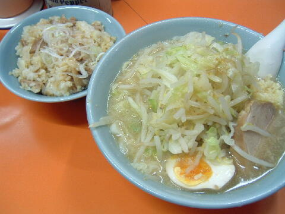
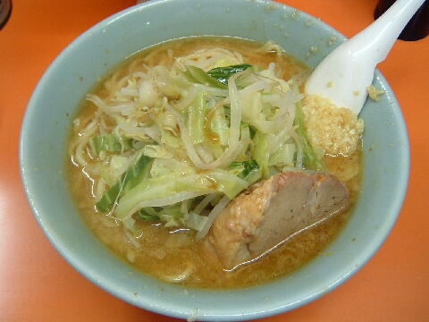
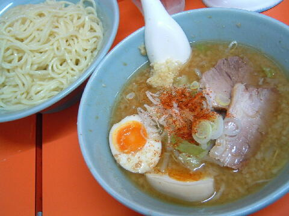

練馬区 関町南 4-25-18
月・火・祝
11：30〜14：30 18：00〜21：30

店員は、かつて三田の名物助手だったサカイさんと助手。
コショウ（SB）。しょうゆだれ。唐辛子はお願いすればだしてくれる。
レンゲ有、エコ箸、ティッシュ有。
BGMは、サカイさんのソプラノ。
トッピングは、ヤサイ，カラメ，ニンニク，アブラ。
「ラーメン いごっそう」でヤフー検索
「ラーメン いごっそう」でヤフーリアルタイム検索
「ラーメン いごっそう」でグーグル検索

らーめん ニンニク
麺は、プニュプニュした加水率高めの丸い中太麺。量は少なめ。
ぶたは、少しパサつくが柔らかいもの。
スープは、アッサリしたスープ。
ヤサイは、モヤシ8：キャベツ2の割合。柔らかめ。
ニンニクは、辛みの強い微細に刻まれた生ニンニク。

つけ麺 ニンニク
トッピングはラーメンと同じ。
タレの皿には、ヤサイ、ぶた二枚、味付け玉子。
これにネギ、ネギ油、唐辛子がかかる。ニンニクはこちらに。
麺の皿には、ラーメン用の皿に麺が山盛り。ラーメンの2倍。

塩らーめん ニンニク 豚めし
まんまだけど、いごっそうの塩ラーメンですな。
豚めしはご飯に、細かくした豚とタレと化調を混ぜたもの。
ご飯は小さめの炊飯器で炊くので、売り切れに注意。持ち帰り可。

味噌らーめん ニンニク
まんまだけど、いごっそうの味噌ラーメンですな。
冬季限定

つけめん（味噌） ニンニク
まんまだけど、いごっそうの味噌つけめんですな。
構成はつけ麺と同じ。
冬季限定
ＰＣ店